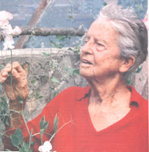
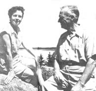
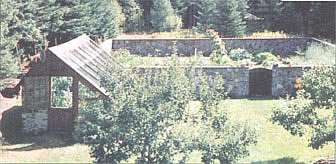
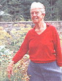
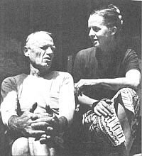
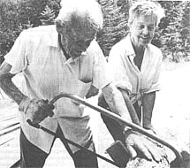

INTERVIEW
In July of 197I, Helen Nearing, then 69, and her husband Scott, 88, honored MOTHER with one of our first "Plowboy" interviews. Free thinkers in an age that greeted outspokeness on women's rights, homesteading, subsistence farming, and vegetarianism with more than a little suspicion, Scott and Helen decided in 1932 to remove themselves from the overheated world of consumerism and "drop out" to a rocky mountain farm in the foothills of Vermont's Green Mountains. The book that detailed their struggle and success, Living the Good Life, sold over 250,000 copies and began the entire "back-to-the-land" revolution. Generations of homesteaders have learned to garden, build with native stone, and live with simple decency from their example. Helen and Scott endured, while the rest of us simply caught up.
After watching their pristine mountains give way to ski lodges and discount outlets, the couple began anew in 1952 on the rugged south coast of Maine, building a two-story house by hand while most others their age were settling into retirement.
In 1983, two months after celebrating his 100th birthday, Scott Nearing quietly died in the farmhouse he built, and Helen carried on their message alone. But far from grief stricken, she continued to welcome thousands of visitors to her home as well as write several books on natural cooking, home building, and the joy of aging.
I was fortunate to catch up with Helen one sunny afternoon just a few days after her 90th birthday, and while we walked (she barefoot) in her garden and ate the new tomatoes, she told me of her days on the farm and the quiet happiness of later life.
- Matthew Scanlon
MEN: How has work on the farm been faring since Scott died?
HN: We had 140 acres when we arrived in Maine, and I have four left. That's just right. It's all I want; right on the ocean, a house, a garden site, and some woods. The four acres is perfect.
When all that land became more than we needed or wanted, Scott and I let whom we considered to be congenial people buy parts of it. For instance, when Eliot Coleman showed up in 1968 looking for a plot to start a new life on, we let him have about 25 acres for the price we paid in 1938. We weren't interested in profiting from the sale.
MEN: Nineteen thirty-two prices?
HN: About $23 an acre. Land is now at least $2,000 an acre right around us in Maine. And I'm sure it's about $5,000 an acre in Vermont. We could have become millionaires. . . and we wouldn't have liked it at all.
MEN: Why?
HN: Scott just didn't want to go into the real-estate business. We had what we needed and lots of money would have complicated things and distracted us. Eliot gardened with Scott for two years and he still has a flourishing home there. He's not only gardening for himself and for his own family, but he's doing experiments with growing hardy winter plants.
Other young kids have turned up and were forlorn and needed land, and I said, "Well, look, have some. Okay with me." And some of them are congenial, and some of them are not. But they're about six or seven different parcels of land up there inhabited by young couples.
MEN: I guess that begs another question and that is when I read your new book, Loving and Leaving the Good Life, I was both happy and sad tit the same time. The story is continuously inspirational, but I felt as if the dream you describe has changed dramatically and the younger generation has the responsibility for finding a new one.
HN: Yes, for young couples it's become very difficult. They often come up [to the farm I and say, "Is there any land around here for sale?" I have to say no, and that even if it were, it would be at an incredible price. You'll have to go north and away from the ocean, I say, and up toward Canada, and even then you may have to buy with someone else. The future of homesteading may be a communal life, at least initially.
I don't envy the kids born or young nowadays. They can still be as happy as Scott and I were, but I also think we lived through a particularly good period. And Scott may have lived through even a better period than I because he always felt the world was different at the turn of the century, and that the First World War changed it. Well, I was just in my early teens during the First World War.
MEN: How did he say the First World War changed the world?
HN: He said it befouled the world and made people more criminally minded. Guns appeared and enemies appeared in hugely increased numbers and national boundaries solidified. He had high hopes for the United States and the world before the war erupted, and in that kind of a world he might have played a major part. The war came along, and changed him, and every nation.
So we went on to our garden quietly, and the political movement left him pretty well alone. During the Second World War, they thought, well, he's an old man, he's spent his arrow, and even McCarthy didn't bother about him. Or maybe they didn't want to stir him up because he was a fiery proponent, and it was easier to leave him alone. You should read his trial; it's condensed in one of his books.
MEN: Just one of the many books you've both written at the farm. You both have made considerable use of your time.
HN: We've written five or six books together, and I've written five or six by myself, but I know which one most people refer to. They mean Living the Good Life, which has sold a couple hundred thousand copies. Since nearly all of Scott's political books were hard-pressed for a publisher, we often published them ourselves. Even later in his life, Scott had many detractors among the academic and publishing community. So whatever we got in from the sale of Living the Good Life went to publish the books no publisher would take. It didn't change our way of life at all. Again, we weren't in it to become rich.
MEN: Scott was accused of sedition after speaking out against the First World War.
HN: Yes, Scott considered the war to be basically a commercial exercise, and insisted upon speaking publicly about it. This was after he was fired from his job at the University of Pennsylvania for speaking out against the use of child labor in industry. So he was no favorite of the establishment and had developed a reputation as an troublemaker. He was given a hearing before a "blue ribbon" panel in Boston and they eventually acquitted him of the sedition charge. They admitted that Scott was an "idealist," but an honorable man. The decision was appealed several times, ultimately to the Supreme Court, and the Supreme Court upheld the decision that he was innocent. But his public life as a writer and professor was over.
MEN: Do you recall him feeling a sense of animosity toward the "establishment" after first moving to Vermont?
HN: He had no bitterness inside himself at all. I think that's why he lived so long. He was at home with himself. He could sleep nights with his conscience. He had done what he could, and apparently there was no place for it in that present period of society, so he went on to his research work. We continued to subscribe to political causes and such. We would go to meetings, and if he was asked, he would address meetings. But he didn't make that a primary concern at all. No, he had retired.
He was really, utterly rejected by the academic community when I first met him. And I don't know what he would have done if I hadn't come along. It was a happy circumstance for us both. He had no regrets at all because we were completely compatible and congenial and had nearly everything in common except music, which was amusing for me because I was supremely interested in music. He didn't really like music and couldn't carry a tune. It was noise to him. But then much of the reason for building a new home in Vermont and then Maine was to rid ourselves of modern noise.
MEN: You've learned so much. Masonry, carpentry, farming, maple sugaring. Did the necessary skills come quickly at the homestead?
HN: No. But we learned every day what we needed to, starting small. Our first house in Vermont was bought already built, but we finished it and later built a small addition, which was our first venture at building with stone. Over time ...many years and lots of mistakes, we learned a great deal. And when we were in Vermont, our neighbors were very knowledgeable. They'd lived there for fifty years before we turned up. We were upstarts. One in particular, Jack Lightfoot, a good old Britisher, was a great source of information on farming and such. I remember one day he was calling to us from maybe a quarter of a mile away, yelling, yelling, yelling across the field that Roosevelt was dead. We had no radio or phone and wouldn't have known otherwise. Our long-distance calling was across to the neighbors. I remember that after Scott died, Jack called me and said "I miss that old bugger."
I was sorry to leave Vermont. We loved the hills, and I still like the mountains more than the ocean. You get a lot of damp weather here, a lot of humid weather. You pay for living by the ocean. I like the mountains better.
MEN: Do you feel, as if your books, such as Living the Good Life, helped people find a different way of living?
HN: To my surprise I find out daily that that is the case. We didn't realize that we were doing anything for anybody else except living decently ourselves, and it certainly has rebounded and it certainly has helped a lot of people. And I thought that after Scott left, it would inevitably calm down, that life would be simpler. But it still goes on, and I'm daily, weekly, surprised at the people who still are influenced, who arrive by the busloads.
MEN: People are still drawn to the farm?
HN: Absolutely.
MEN: Have their questions changed over the years?
HN: They have. People are more ready to go and do it themselves now, more serious about making the transition. They used to be just interested theoretically, but now they're armed with more practical questions on how to mix concrete, how to build a house, how to garden, how to grow vegetables, and a hundred other things. And they know the work involved. Before they didn't realize how much work was involved in a homestead, or if they did, they'd prefer their time in a hammock.
But we didn't do it with that in mind at all. It was just force majeure, we had to live that way, and it was natural to us, with no great effort. People say, "What a lot of hard work you've done in your life." Wasn't hard. It was interesting and worthwhile, and I'm glad we did it.
MEN: How did Scott react to such constant visitors? Was he distracted or did he just take it all in stride?
HN: He'd go about his work. He'd say, "Well, look, I've got to go out and weed the garden" or "Come out and help me and saw wood or something or other." He would take it for a certain amount of time, and then he'd say, "Well, that's enough, let's go out and do something else."
Now they come partly to buy his books, talk about him, to see the house we built, as well as the garden. And I welcome all and every, but it disrupts my work so much that I have difficulty writing there. I can tend to minor things, but I can't do any creative writing. It's too much.
But I welcome that, it's okay. I'm there for open house. I put up a sign saying "Visitors: 3 to 5," but they come any time of the day. I see them coming in and looking at the sign, and the most considerate ones pull out and go away, and I run after them and say, "It's okay, you can come in!"
MEN: Are they mostly young people?
HN: No, no, no, no. Many are people who've really done it, in their 50s, 60s. They come up and say that they have built houses and want to see how I've pointed the stonework and that sort. We have all ages and all propensities. Some of them don't know a cabbage from a radish, but they love to look around.
MEN: When did you get a television?
HN: Never. I've never owned one. Never will. I'd watched television three times before this year. I'd seen Nixon resign. I went deliberately to the neighbors next door to see that. I saw Carter and Amy walk down the (Pennsylvania) avenue hand in hand during his inauguration celebration, and I was at a party where they showed (Princess) Diana's wedding. So those three times I had witnessed television until I came down for the winter here in Florida. Now I watch the "MacNeil Lehrer News Hour."
MEN: I know you're well aware of this, but people are going to find that incredible.
HN: Apparently 1 percent of the population in the U.S. does not have television, 1 percent.
MEN: I have trouble envisioning a world in which I don't know what the weather's going to be like three or four days from now, or the news in Asia, or what the business markets are up to.
HN: But to what good? To what advantage? How has it enriched lives really except with some money and the ease of application? You will feel the weather coming when you grow accustomed to it. Read a newspaper if you want to know the news. We read endlessly and got much more from that experience.
MEN: And yet modern communication does allow people to live in the country and do business there. In a way I think it can facilitate homesteading by allowing people to abandon the congestion of the cities.
HN: That's possible. But, I've found that the more I relied on my own devices for independence, the more real it became.
I got an electric typewriter last year. I had a Hermes manual. I disliked the electric typewriter so much that I gave it back, and I'm back to my old manual.
MEN: What about the electric typewriter didn't you like?
HN: My touch was too hard for it. I didn't like the noise and the mechanism of it and the facility of it. I preferred to pound out my own letters, just as Scott preferred to work with his own shovel instead of hiring a digger to come in. We were quite at one in so many things. I with my different background and he with his different background, we coincided remarkably I now think.
MEN: You gave in when it came to the phone though.
HN: Yup. I decided to get one when Scott was in his late 90s just in case something happened. I had it in the barn so that Scott couldn't hear it in the house. I said neighbors could use it if they wrote down their calls. Maybe they forgot. After paying a $90 bill I moved it indoors and reluctantly answer it. I'll have my peace in the garden. If I don't hear the phone, good.
MEN: Hearing how Scott died was incredible. I mean Americans aren't supposed to die.
HN: (Laughs) No, not knowledgeably and determinedly and decidedly.
MEN: He was just sitting among some friends after lunch and said...
HN: Yes. He said, "I think I'm not going to eat anymore."
MEN: The decision seemed as innocuous as saying, "I think I'm going to put on a sweater."
HN: Yes. Well, he obviously had thought about it before. I don't think I was quite prepared for it, but I eventually thought, "Good idea." I'm at one with him in that. It was two months before his 100th birthday. The neighbors had a little parade for him.
Going without food is really quite an agreeable way to die. The body just gradually slows down, and there's very little acrimony. I was next to him when he left, and my love went with him. It was a very peaceful transition.
I read a sentence the other day that I liked very much. If you didn't know when you were born, the year of your birth, how old do you feel? How do you gauge yourself? And I thought, "Gee, I'm 90. How do I feel?" About 60, thirty years younger, I think. And as for the spirit, I probably feel about 30.
MEN: You mention in your book that you feel some fascination for determining how many years you might have left. There's a constant knowledge throughout that death is very close, but there's no mention of any fear. Doesn't the thought of death cause you any discomfort?
HN: I don't comprehend that at all. Ever since I was a child, I have been ready to go and interested in what went on beyond. People cling to life. I don't cling to life at all. This is pure illusion to me. I mean, there are trees and sunshine and the world is around, but this is a symbol of something much, much bigger. The world has beauty and wonder, but it doesn't really enthrall me. I'm ready to get to something more real than this.
If you hear that I went tomorrow, just say she went happily and interestedly. It's okay if I went tomorrow. In fact, it would be kind of nice if I went tomorrow. I look forward to it.
MEN: Neither you nor Scott really subscribed to any particular religious belief.
HN: No, we didn't go to church. I do believe that the world is here for a purpose though, and that we're here for a purpose, and that we can do something about it. We can mess it up or we can enhance it, and I'd like to enhance it if possible. But mankind can't possibly conceive what it's all about or what it's for. There is a benign purpose, and I would like to cooperate with it. Not much of a religion, but it's sufficient to try to live a good life.
MEN: It's sufficient for me.
HN: I don't need a god or a priest to tell me what to do. I think that's what amazed Mrs. Maria Von Trapp when she came up to visit us in Vermont many years ago. She said, "Here you are trying to live a good life without a priest to tell you what to do or who to turn to!"
MEN: She found that...
HN: Very disturbing. Couldn't quite get over that. Yes, she tried to convert us to Catholicism. You would have been amused to hear that conversation.
MEN: So priests are out. What about doctors?
HN: I don't know when or if I've ever had a complete checkup. I mean, I just feel okay. Why go to a doctor? When Scott was still around; it must be about twenty years ago. A doctor came by the farm. Scott was working with a wheelbarrow and I was doing some heavy work. He said to his wife, "Do you know the age of these people? Do you see what they're doing? Do you see their work?" He said that he was going to ask us to come to the hospital and see if he couldn't find something wrong with us.
We said sure as long as he didn't attack us with injections or anything like that, so we went to the hospital in Bangor. He tested us all over. He was so torpid and sleepy at the interview that he almost fell asleep. He had next to no energy. Well, he could find nothing wrong with us, but apparently we were low on B-12. He happened to be a B-12 specialist.
MEN: He probably thought, "Eureka!"
HN: He was overjoyed to find that we were so low on B-12, but Scott suggested that he should test us differently than how he tested meat-eating people. For them, our readings would be very low. So maybe this is the norm for us. And the man said that we might have been right. He has died since then I think.
Some people took exception to Scott and I speaking in public about living simply, about independence and care for the earth. They needed to trip us up.
MEN: I recall reading about an episode in which a man accosted you about your suit while you were at a conference.
HN: Oh yes. (Laughs) That was terrific. We were speaking at a large meeting at a school one day when a man, a local tailor, stood up and said, "Mrs. Nearing, I know my craft, and happen to know that the suit you have on is worth at least $150." He was implying that my lessons on frugality were lost on myself. But I said, "Oh really, that's great because I got it for $3 on sale in a thrift shop." It brought the house down.
He was animated. But I wouldn't go into an ordinary store and pay their regular price. I don't need clothes. What do I need?
MEN: A few months before he decided to stop eating, Scott said he was worried that mankind was doing a second-rate job of taking care of business here and that we might almost better be gotten rid of as painlessly as possible.
HN: Yes. He thought that.
MEN: Do you agree with that statement?
HN: I think mankind is an experiment that's certainly been botched. I can't say it's failed yet because when you hear the marvelous musicians or read wonderful poetry or the great thoughts of the great lives of so many people, you think it's worth it. But on the other hand, the majority of the population is not doing very well.
We haven't even learned common ordinary brotherhood. Look at the fighting that's going on in the world today, and the crime and the pollution and all. We haven't learned the bare essentials yet. A few people have, but the vast majority, no.
MEN: The early '90s have at least been an improvement on the environmental ignorance that characterized the last decade. Do you find that encouraging?
HN: Do you think the '90s are an improvement on the '80s?
MEN: Well, I think that among the media, there seems to be at least...
HN: An awareness?
MEN:... an admission that the '80s were an unfortunately greedy time as far as society's environmental responsibilities are concerned.
HN: I think that you're probably right. Although some of the things I see with the killing of the animals doesn't please me so much. I'm fervently at heart a vegetarian. I don't think it's necessary to kill animals and certainly not to eat them. I can't imagine eating flesh, eating creatures.
MEN: You've been a vegetarian since you were 15 or 16, haven't you?
HN: Earlier than that. Born one. My parents were vegetarians. Unusual to find them at that time. They were vegetarians in the 1890's, so I think I picked them.
MEN: Just one last, hokey question. If you could only save three of the thousands of books from your library, can you possibly imagine what they might be?
HN: One I know I'd want would be Olive Shriner's Dreams. She wrote allegories, and they're beautiful things that Scott and I read a good deal together.
I would also want an unabridged dictionary because then I could write my own books and look up all those wonderful derivations. The third one might be Walden. But the dictionary would be really, really important.
|
 A talk with the Mother of the ""back to the land"" movement. |
 Bird's-eye view of the native stone garden wall. Construction of the wall took 16 years. |
 Inside the enclosed garden on the Maine Farm. |
|
 |
 |
 |